UD6: MULTICAPA - DADES I MODEL D'OBJECTES DEL DOCUMENT¶

INTRODUCCIÓ¶
En aquesta unitat començarem a utilitzar el framework de desenvolupament web anomenat Django, basat en el llenguatge de programació Python.
En primer lloc desenvoluparem, de manera guiada, un portafolis semblant al de les unitats anteriors, per tal de veure les similituds i diferències entre els dos processos. També utilitzarem la tecnologia Docker per executar el nostre codi en un contenidor de Python.
Finalment, utilitzarem tots els recursos exposats per començar el segon projecte del curs, que abastarà tres unitats.
AVALUACIÓ¶
El present document, juntament amb el seu corresponent butlletí d'activitats (publicat addicionalment), cobreix els següents criteris d'avaluació:
| RESULTATS D'APRENENTATGE | CRITERIS D'AVALUACIÓ |
|---|---|
| RA5. Desenvolupa aplicacions Web identificant i aplicant mecanismes per a separar el codi de presentació de la lògica de negoci. | a) S'han identificat els avantatges de separar la lògica de negoci dels aspectes de presentació de l'aplicació. b) S'han analitzat i utilitzat mecanismes i frameworks que permeten realitzar aquesta separació i les seues característiques principals. e) S'han identificat i aplicat els paràmetres relatius a la configuració de l'aplicació web. f) S'han escrit aplicacions web amb manteniment d'estat i separació de la lògica de negoci. g) S'han aplicat els principis i patrons de disseny de la programació orientada a objectes. h) S'ha provat i documentat el codi. |
| RA6. Desenvolupa aplicacions web d'accés a magatzems de dades, aplicant mesures per a mantindre la seguretat i la integritat de la informació. | a) S'han analitzat les tecnologies que permeten l'accés mitjançant programació a la informació disponible en magatzems de dades. b) S'han creat aplicacions que establisquen connexions amb bases de dades. c) S'ha recuperat informació emmagatzemada en bases de dades. d) S'ha publicat en aplicacions web la informació recuperada. e) S'han utilitzat conjunts de dades per a emmagatzemar la informació. |
ENTORNS VIRTUALS EN PYTHON¶
En les aplicacions basades en Python és freqüent utilitzar paquets i mòduls que no formen part de la llibreria estàndard. Moltes vegades, determinades aplicacions necessiten de determinades versions de llibreries específiques, i això implica que la instal·lació local de Python pot no arribar a complir les especificacions de totes les aplicacions.
La solució a aquest problema són els entorns virtuals: es tracta d'un arbre "autònom" de directoris que conté una instal·lació de Python, per a una determinada versió i amb una sèrie de paquets addicionals.
D'aquesta manera, diferents aplicacions poden utilitzar diferents entorns virtuals, depenent de la versió, tant de Python, com dels paquets addicionals perquè l'aplicació funcione correctament. La següent imatge il·lustra un mateix equip en el qual existeixen diferents entorns virtuals, amb diferents versions de Python, per a projectes diferents:
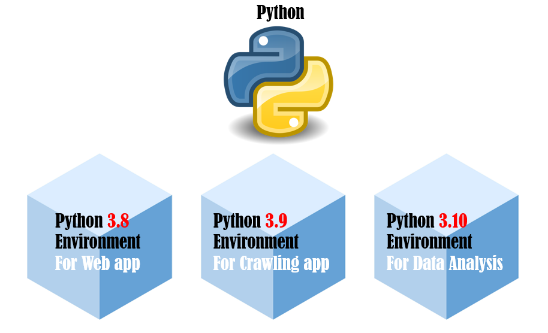
Creació d'un entorn virtual¶
El mòdul utilitzat per a la creació d'entorns virtuals és venv. Per a instal·lar-lo en Ubuntu, l'ordre és:
sudo apt install python3-venv
L'ordre per a crear un entorn virtual en un directori determinat és:
python3 -m venv app-env
Aquest ordre crearà el directori "app-env" amb un arbre de directoris que contenen l'intèrpret de Python i arxius de suport. El paràmetre "-m" indica a l'intèrpret de Python que s'executarà un mòdul, en aquest cas "venv", com a script. Si vols saber més sobre els mòduls en Python, ací tens més informació.
En aquest enllaç es poden trobar instruccions per instal·lar un entorn virtual en Windows i Mac.
Per a activar l'entorn virtual de Python, s'utilitzarà una d'aquestes ordres, depenent del sistema operatiu (des de la ruta en què es trobe la carpeta "app-env"):
- En Windows:
app-env/Scripts/activate.bat
- En Linux o MacOS:
source app-env/bin/activate
Després d'executar aquesta ordre, sabrem que estem utilitzant l'entorn virtual perquè la línia d'ordres passarà a tindre el nom de l'entorn virtual entre parèntesis:
(app-env) usuari:$
Gestió de paquets mitjançant pip¶
Es poden instal·lar, actualitzar o eliminar paquets utilitzant el programa pip, que instal·la paquets, per defecte, de l'índex de Paquets de Python (https://pypi.org), que pot ser explorat manualment mitjançant un navegador web.
pip té una sèrie d'ordres (install, freeze, uninstall, etc.), que poden ser consultades en la documentació oficial.
Es pot instal·lar l'última versió d'un paquet utilitzant el seu nom, de la forma:
(app-env) $ pip install flask
És possible també instal·lar la versió específica d'un paquet, especificant el seu nom, seguit de "==" i finalment la versió. Exemple:
(app-env) $ pip install requests==2.6.0
(app-env) $ pip install --upgrade requests
pip show mostrarà informació d'un paquet en particular.
pip list mostrarà tots els paquets instal·lats en l'entorn virtual.
pip freeze mostra una llista similar a pip list, però en un format tal que es puga utilitzar per pip install per instal·lar aquesta llista de paquets en una sola ordre. Com a pràctica comunament acceptada, es bolca el resultat de pip freeze en un fitxer "requirements.txt", de la forma:
(app-env) $ pip freeze > requirements.txt
(app-env) $ pip install -r requirements.txt
CREACIÓ DEL PRIMER PROJECTE DJANGO¶
Anem a crear el nostre primer projecte amb Django.
Creem un primer entorn virtual anomenat "portfolio-venv" en una carpeta de la nostra elecció, on llancem la següent ordre mitjançant consola:
python3 -m venv portfolio-env
source portfolio-env/bin/activate
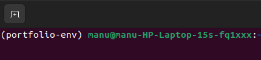
Abans d'executar la instal·lació de Django, anem a esbrinar quina és l'última versió LTS (Long-term Support), que és la que ens proporcionarà major duració en el suport (amb altres avantatges). Consultem el següent enllaç, i veiem que la més recent és la 5.2 i a més és LTS, amb la qual cosa és la candidata ideal per al nostre nou projecte. Tot i això, cal valorar també que la 4.2 (també LTS) tindrà suport fins a març de 2026. Les versions existents en aquest moment es poden consultar en la imatge de l'enllaç anterior:
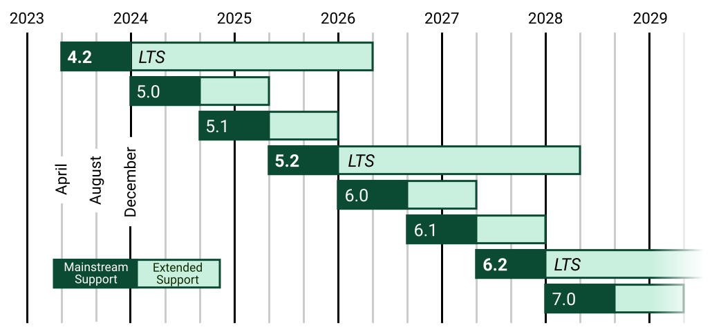
L'avantatge d'elegir l'última versió serà que tindrem accés a les últimes funcionalitats; els desavantatges seran que ens podrem trobar més bugs (errors), i que potser molts paquets que ens proporcionen funcionalitat addicional, no siguen compatibles amb aquesta versió. Els avantatges/desavantatges d'elegir l'última versió LTS són les inverses a les mencionades per a l'última versió.
Encara que és una elecció no sempre òbvia, ens decantarem per instal·lar l'última LTS (la 5.2) perquè és l'última versió i a més LTS.
Amb tot això, l'ordre per instal·lar la versió 4.2 serà la següent:
pip install Django==5.2
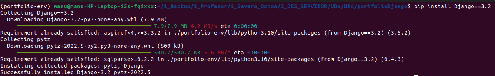
Creem el fitxer requirements.txt:
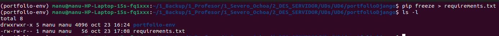
Estem preparats per crear el nostre primer projecte Django, que anomenarem portfolioDjango. Executem la següent ordre:
django-admin startproject portfolioDjango
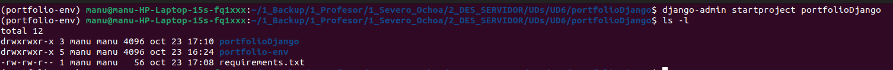
Si obrim aquest directori amb Visual Studio Code (o un altre IDE, com PyCharm), veurem l'estructura de directoris que s'ha creat (creem també el workspace):
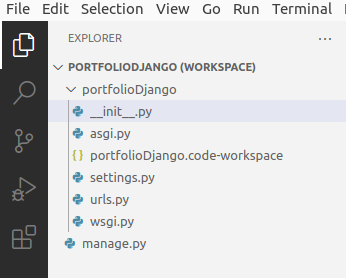
Per a llançar aquesta aplicació, llançarem la següent ordre, des del directori on es troba el fitxer manage.py:
python manage.py runserver
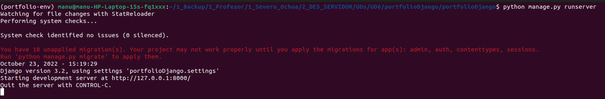
Ens informa (entre altres coses que ignorarem en aquests moments) que la nostra aplicació s'ha llançat en el port 8000. Ho provem, i obtenim el següent:
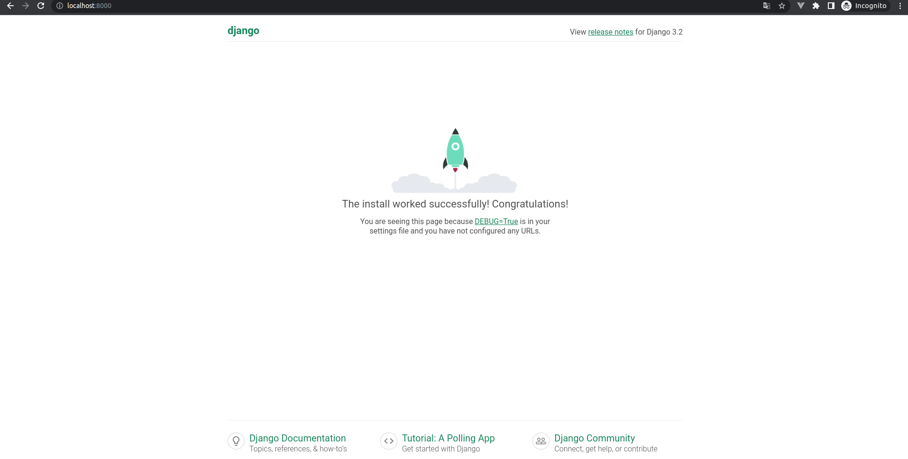
Per tant, hem pogut llançar la nostra primera aplicació Django.
PORTAFOLIS AMB DJANGO¶
En aquesta secció, desenvoluparem un portafolis utilitzant Django, seguint una estructura similar a la de les unitats anteriors, però aprofitant les funcionalitats que ofereix aquest framework.
Configuració¶
El primer fitxer en què ens hem de fixar, dels que s'han creat automàticament en generar el projecte, és el denominat settings.py. En aquest fitxer residirà gran part de la configuració de la nostra aplicació. Les parts més importants a destacar en aquests moments són les següents (en aquest enllaç les tens totes, per a la versió 5.2):
-
SECRET_KEY: és una cadena autogenerada que mai hem de compartir públicament si volem desplegar la nostra aplicació web en un entorn de producció (caldria ocultar-la si la pugem públicament a Github, per exemple). El valor d'aquesta variable s'utilitza per proporcionar criptografia en la signatura de sessions d'usuaris, i si es coneix el seu valor, es podrien alterar les cookies que envia el servidor i atacar la nostra aplicació.
-
DEBUG: indica si estem en mode debug. Si és True, en cas que es produïsca un error en la nostra aplicació, es mostrarà al navegador informació per poder depurar aquest error. Entre aquests detalls es mostra informació molt sensible, que només és convenient mostrar en un entorn de desenvolupament. Per tant, en un entorn de producció, aquesta variable ha de tindre el valor False.
-
ALLOWED_HOSTS: és una llista amb els noms de host/dominis que aquesta aplicació pot servir com a part de la URL, utilitzada en entorns de producció per evitar determinats tipus d'atacs HTTP. Típicament, per a desenvolupament tindrà els valors "localhost" i "127.0.0.1". Per a un entorn de producció, introduirem el nom del nostre domini, amb i sense "www" al principi.
-
INSTALLED_APPS: són els paquets addicionals que s'utilitzen en l'aplicació web. Segons la nomenclatura de Django, aquests paquets s'anomenen "aplicacions". Ho veurem amb més detall en un dels següents apartats, on crearem una nova aplicació i descobrirem com trobar aplicacions ja desenvolupades que facen determinades coses per nosaltres.
-
TEMPLATES: Mitjançant aquest array configurarem els tipus de plantilles i els directoris on es troben. Les plantilles són fitxers HTML amb codi Python incrustat, la qual cosa les fa dinàmiques.
-
DATABASES: En generar el projecte es preconfigura la utilització d'una base de dades sqlite3, una base de dades lleugera i adequada per a tasques de desenvolupament web amb pocs dades. Però es podria establir una altra base de dades, de major envergadura, en un entorn de producció (per exemple, Postgresql).
-
LANGUAGE_CODE: Idioma per defecte en què volem servir per defecte el contingut de l'aplicació web.
-
TIME_ZONE: Fus horari en què està basada la nostra aplicació web.
-
STATIC_URL i STATIC_ROOT: S'utilitzen per configurar la ruta on es serviran els fitxers estàtics de la nostra aplicació web.
Amb tot això, anem a canviar els valors d'algunes d'aquestes variables:
LANGUAGE_CODE = 'ca'
TIME_ZONE = 'Europe/Madrid'
STATIC_URL = '/static/'
STATIC_ROOT = os.path.join(BASE_DIR, 'static')
A més, modificarem la variable TEMPLATES, mitjançant la qual especificarem que les nostres plantilles es localitzaran en el directori templates. Creem aquesta carpeta, al mateix nivell que el fitxer manage.py:
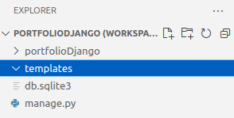
I canviem la variable TEMPLATES de settings.py de manera que l'element DIRS tinga el següent valor:
'DIRS': [os.path.join(BASE_DIR, 'templates')],
import os
Aplicacions¶
En primer lloc, cal diferenciar dos conceptes clau en Django:
- Projecte: s'identifica amb el conjunt de l'aplicació web desenvolupada, i el seu directori arrel es troba al nivell (normalment) del fitxer manage.py.
- Aplicacions (o app): són paquets escrits en Python que proveeixen al projecte de funcionalitats particulars. Són prou independents entre si per poder ser reutilitzades.
Les aplicacions poden ser reutilitzades en diferents projectes.
En el següent enllaç es troba una recopilació (no exhaustiva) d'algunes aplicacions en Django que pots reutilitzar en els teus projectes:
Algunes de les aplicacions que utilitzarem durant la resta del curs seran:
- Django Crispy Forms: ens servirà per controlar millor l'aspecte i funcionament dels formularis.
- Django Rest Framework: utilitzat per a la creació de serveis REST.
Per què necessitem saber què és una aplicació en aquests moments? Per desenvolupar mòduls de funcionalitats noves per al nostre projecte, les hem de crear en forma d'aplicacions. Podem crear aplicacions noves, cadascuna amb un propòsit particular (de manera que modularitzem la nostra aplicació web amb blocs independents) o també podem utilitzar aplicacions existents, com s'ha explicat abans.
Algunes d'aquestes aplicacions pertanyen al propi nucli (core) de Django, i el projecte ve configurat per defecte amb algunes d'elles. Si ens fixem en la llista INSTALLED_APPS, veurem que conté 6 entrades:
INSTALLED_APPS = [
'django.contrib.admin',
'django.contrib.auth',
'django.contrib.contenttypes',
'django.contrib.sessions',
'django.contrib.messages',
'django.contrib.staticfiles',
]
Volem crear ja la nostra pròpia aplicació, perquè volem començar a desenvolupar el nostre portafolis. Per això, crearem una nova aplicació amb la següent ordre, que executem des de la carpeta on es trobe manage.py (amb l'entorn virtual activat):
python manage.py startapp portfolioapp
Revisem l'estructura del projecte, i podem veure que s'ha creat una carpeta nova amb nom "portfolioapp", amb molts fitxers nous:
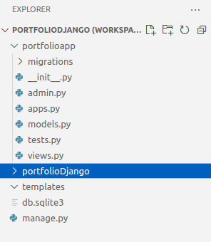
Encara no sabem per a què serveixen aquests fitxers, ho anirem descobrint al llarg de la unitat. Cal mencionar que, cada vegada que creem una app per a un projecte, es crearà una carpeta diferent, amb els mateixos fitxers inicials.
Recapitulant: hem creat una aplicació nova, encara no fa res, però ja té el seu lloc en el nostre projecte. És suficient amb el que hem fet per connectar-la al nostre projecte? Falta un petit detall: en la llista INSTALLED_APPS citada anteriorment, hem d'afegir la nostra nova app perquè els canvis tinguen efecte. Després de la modificació, aquesta variable queda de la següent manera:
INSTALLED_APPS = [
'django.contrib.admin',
'django.contrib.auth',
'django.contrib.contenttypes',
'django.contrib.sessions',
'django.contrib.messages',
'django.contrib.staticfiles',
'portfolioapp',
]
Quasi hem acabat, anem a alçar el projecte:
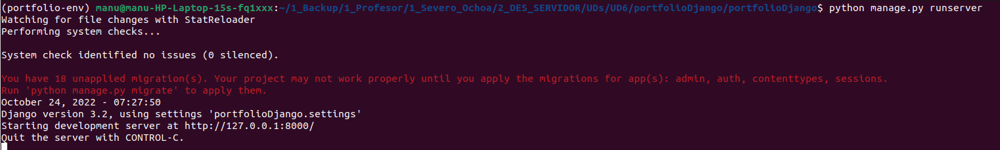
Recordes aquell missatge en roig que ens apareixia en alçar l'aplicació web? Diu exactament:
You have 18 unapplied migration(s). Your project may not work properly until you apply the migrations for app(s): admin, auth, contenttypes, sessions.
Run 'python manage.py migrate' to apply them.
El missatge fa referència a migracions d'apps, algunes de les quals, "casualment", apareixen en la llista INSTALLED_APPS. I ens proporciona una ordre per solucionar el problema.
Sembla que el que hem vist en aquest apartat no era tot el que necessitàvem per acabar de configurar les nostres apps. Aquesta qüestió la resoldrem en el següent apartat, quan implementem els models de la nostra nova aplicació "portfolioapp".
Models¶
En el projecte anterior en PHP vam implementar la connexió a la base de dades en l'última fase. Ara ho farem al revés, començarem a utilitzar la BBDD des de l'inici del projecte. Per a això necessitem taules on emmagatzemar la informació, com les crearem amb Django? Molt fàcil: les crearem mitjançant el fitxer models.py que es troba dins de la nostra aplicació, mitjançant els anomenats "models" de Django.
Un model representa una font d'informació única de dades, conté els camps i el comportament de les dades a emmagatzemar, i generalment un model es transforma en una taula de base de dades.
Pots trobar tota la informació sobre els models de Django en aquest enllaç.
Definició¶
Començarem creant dos models: el de projecte i el de categoria. Introduïm el següent en portfolioapp/models.py:
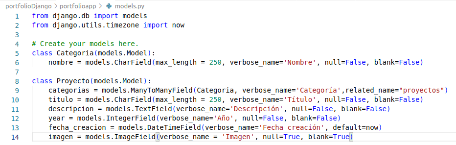
Cal destacar que:
- Per fer un camp opcional, s'estableixen els atributs null i blank a True.
- També es poden donar valors per defecte, com el cas de data_creacio.
- És convenient definir l'atribut verbose_name en tots els camps, la qual cosa serà molt important quan vegem l'administrador de Django.
En aquest enllaç tens una descripció de tots els tipus de camps.
Cal notar que no hem definit cap columna "id" per a les nostres taules. Django s'ocupa directament de fer això per nosaltres, segons es detalla en aquest enllaç. A aquesta columna la podem referenciar amb "id" o "pk", indistintament.
Dedicarem un apartat exclusiu per a la definició del camp que contindrà la imatge del projecte.
Migració¶
En l'apartat anterior hem definit els models. Això és una declaració d'intencions, no hem creat realment encara res en la base de dades sqlite3 (configurada en settings.py). Com traslladem aquesta definició de models a la base de dades? Molt fàcil: mitjançant les ordres makemigrations i migrate.
Podem aplicar aquestes ordres a totes les aplicacions del nostre projecte, o les podem realitzar per a una app en particular. Anem a migrar només l'aplicació que hem creat "portfolioapp".
Executem la primera ordre:
python manage.py makemigrations portfolioapp
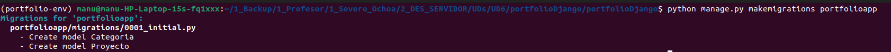
Observem que s'ha creat un nou directori en la carpeta portfolioapp anomenat "migrations", i dins tenim un fitxer 0001_initial.py:
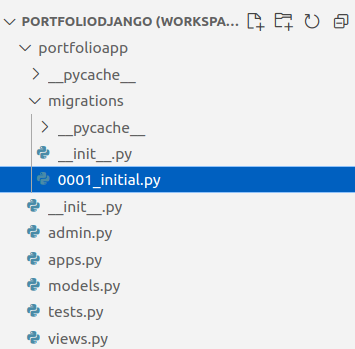
Si obrim aquest fitxer de migració veurem com s'ha traduït la definició dels models a sentències SQL.
IMPORTANT: no modifiques res d'aquest fitxer, es genera automàticament.
Anem a migrar aquests canvis perquè es facen efectius en la BBDD (perquè siguen executats realment pel gestor de base de dades). Per a això executem la següent ordre:
python manage.py migrate portfolioapp
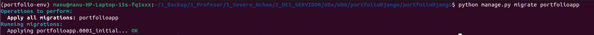
Ara podem assegurar que les taules corresponents s'han creat en la base de dades.
Però, tenim encara un problema pendent des del principi. És el problema que s'indica cada vegada que iniciem la nostra aplicació web, assenyalat pel següent missatge:
You have 18 unapplied migration(s). Your project may not work properly until you apply the migrations for app(s): admin, auth, contenttypes, sessions.
Run 'python manage.py migrate' to apply them.
Aquest missatge es deu al fet que totes aquelles apps que venien per defecte en Django quan vam crear el projecte (especificades a INSTALLED_APPS, de settings.py), també necessiten que es creen les seues taules en la base de dades. Més endavant (en una altra unitat) veurem com crear fitxers de migració inicials per a les nostres pròpies apps, de manera que puguem crear dades inicials en la nostra BBDD de forma automàtica.
Per tant, per solucionar aquest error d'una vegada per totes, executarem l'ordre migrate, però per a totes les apps. Per a això, simplement no especifiquem el nom de l'app:
python manage.py migrate
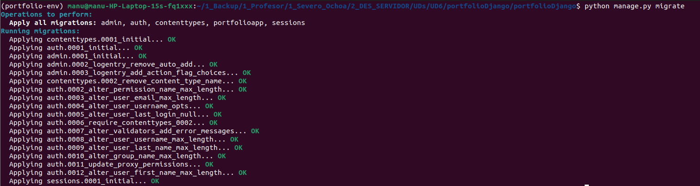
Ara iniciem l'aplicació:
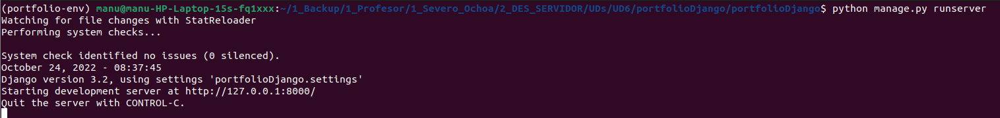
I ja no ens apareix el missatge d'error anterior.
ImageField¶
En aquest apartat modificarem el model Projecte per poder incloure un nou camp al qual associar una imatge.
Django ofereix dos tipus de camps de model que impliquen pujar un fitxer mitjançant l'aplicació web: FileField i ImageField. Cadascun d'aquests tipus de camps té particularitats, però tots dos necessiten una ruta en la qual emmagatzemar els fitxers que s'envien des del costat client (agent d'usuari). Aquesta ruta es determina mitjançant les variables MEDIA_ROOT i MEDIA_URL, especificades en settings.py.
En aquests moments no tenim configurades aquestes variables, anem a incloure-les en aquest fitxer amb els següents valors (sota la configuració de STATIC_URL):
MEDIA_ROOT = os.path.join(BASE_DIR, 'media/')
MEDIA_URL = '/media/'
from django.contrib import admin
from django.urls import path
from django.conf import settings
from django.conf.urls.static import static
urlpatterns = [
path('admin/', admin.site.urls),
]
if settings.DEBUG:
urlpatterns += static(settings.MEDIA_URL, document_root=settings.MEDIA_ROOT)
Només ens queda una dependència per poder modificar el model Projecte: hem d'instal·lar el paquet Pillow perquè Django puga gestionar les imatges que pugem. Per això executem la següent ordre (amb l'entorn virtual activat):
pip install Pillow
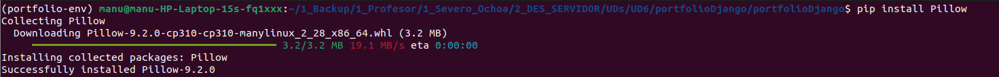
MOLT IMPORTANT: Recorda congelar el fitxer requirements.txt amb les dependències del projecte.
NOTA: Normalment aquestes són configuracions que es realitzaran al principi del projecte i després patiran lleugers canvis (o cap).
Ara anem a modificar el model Projecte, i afegim el següent atribut (el fem opcional):
imagen = models.ImageField(verbose_name = 'Imatge', null=True, blank=True)
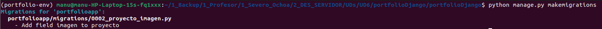
Consultem la carpeta migrations i veiem que hi ha un nou fitxer amb seqüència 0002:
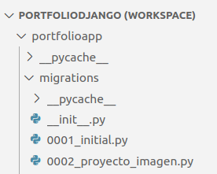
Cada vegada que fem un canvi en els nostres models que implique un canvi en la BBDD, es crearà un nou fitxer en aquesta carpeta. No manipules mai aquests fitxers manualment, Django conserva una traça de quins ha processat ja i quins no. Alterar la seqüència pot implicar inconsistències en la BBDD i haver de perdre totes les dades.
Finalment, apliquem les migracions amb migrate:
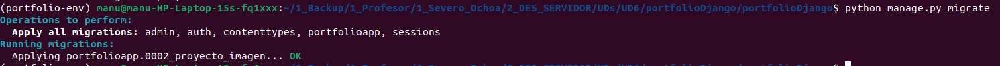
Ara, el nostre nou camp es troba en la BBDD.
Administrador de Django¶
Hem creat dos nous models en la nostra nova aplicació portfolioapp. Com podem gestionar les dades associades a cada model des d'una interfície amigable? Resposta: programant l'administrador de Django.
Django ve amb una aplicació que ens permet gestionar els nostres models de forma visual, a més de moltes altres coses. Es tracta de la primera app continguda en la llista INSTALLED_APPS, anomenada "django.contrib.admin". Però perquè els nostres models es puguen gestionar mitjançant l'administrador de Django, primer hem de configurar el fitxer admin.py de cada app.
Anem a fer-ho. Introduïm el següent en el fitxer admin.py dins de portfolioapp:
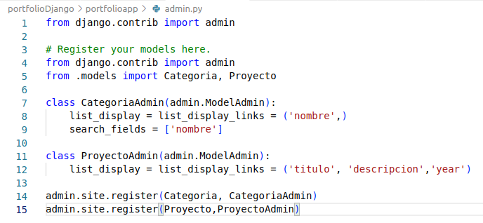
Totes aquestes classes i atributs estan especificats en aquest enllaç, encara que en classe comentem els més rellevants.
Després d'això, tornem a llançar l'aplicació web. Consultem localhost:8000 però res sembla haver canviat. Anem a localhost:8000/admin i veiem el següent:
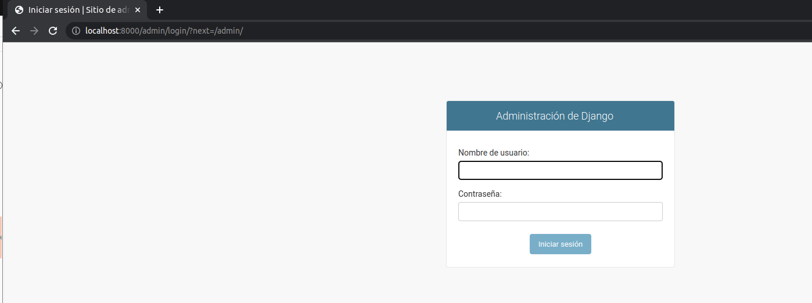
Sembla que ha funcionat, però (com és lògic), l'aplicació ens demana un usuari per poder accedir a l'administrador.
És evident que necessitem unes credencials, però, quines? Hem de crear un usuari administrador per a la nostra aplicació web, i el podem crear amb la següent ordre (amb l'entorn virtual activat):
python manage.py createsuperuser
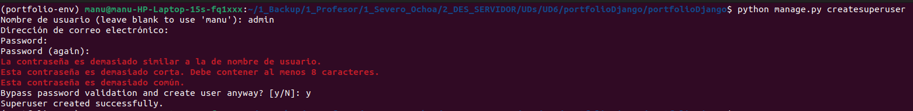
El procés verifica que la nostra contrasenya tinga una mínima complexitat, encara que podem saltar aquestes restriccions (comentant determinades línies en settings.py).
Tornem a llançar l'aplicació web i ara utilitzem el nostre usuari i contrasenya per accedir a l'administrador:
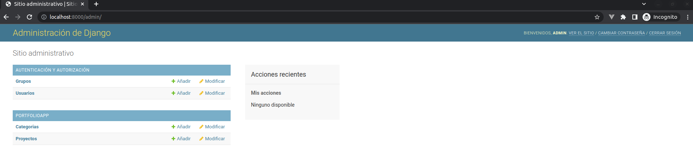
TASCA: En classe, utilitzarem aquest administrador per introduir registres de prova en l'aplicació.
RECAPITULEM: Tenim la base de dades, tenim taules i dades en elles.
Què ens queda? Hem d'aconseguir ara la part visual de la nostra aplicació web, poder fer-la dinàmica amb les dades que tenim en la BBDD, i a més establir la navegació pel nostre lloc web.
Per a això necessitarem els següents apartats: plantilles HTML, les vistes (que implementaran la nostra lògica de negoci) i la configuració de les URLs del nostre lloc web (que invocaran la lògica de negoci i navegaran). Anem a per això en els següents apartats.
Plantilles en Django¶
Django ve amb un motor de plantilles anomenat DTL (Django Template Language), encara que és possible utilitzar altres com Jinja2. Un projecte Django pot configurar-se per utilitzar un motor de plantilles o més, o fins i tot cap.
Aquest motor de plantilles ens permet construir la part visual de l'aplicació, amb codi HTML (estàtic) i una sintaxi especial que el fa dinàmic. En aquest enllaç trobaràs tot el relatiu al motor de plantilles de Django.
Jerarquia de plantilles¶
Les plantilles en Django segueixen una estructura jeràrquica. Això vol dir que es defineixen de manera que unes es poden utilitzar de base per a altres plantilles. Les plantilles permeten ser esteses si s'utilitza la sintaxi adequada.
Per a aquest projecte utilitzarem la jerarquia de plantilles següent:
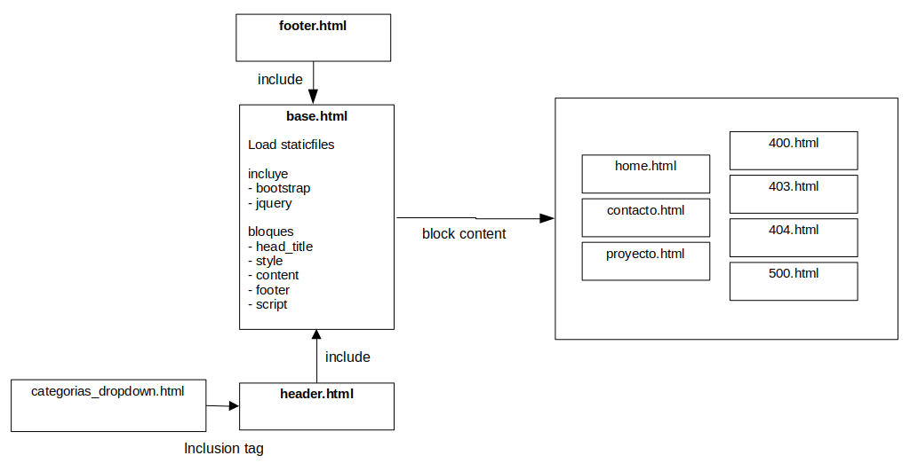
Descarrega aquestes plantilles (incompletes) templates.zip en una nova carpeta "portfolio", dins d'una altra carpeta "templates", segons aquesta estructura:
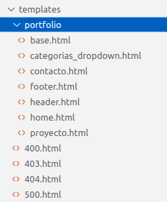
En classe les revisarem i explicarem la sintaxi bàsica que apareix en elles. Pren notes.
Fitxers estàtics¶
Les aplicacions web normalment necessiten utilitzar el que s'anomena fitxers estàtics (imatges, fitxers JavaScript, CSS, etc.).
Si, per exemple, naveguem a l'administrador de Django en localhost:8000/admin, veurem en la consola el log del servidor de Django. Algunes de les línies que apareixen fan referència a recursos estàtics que aquest administrador necessita:
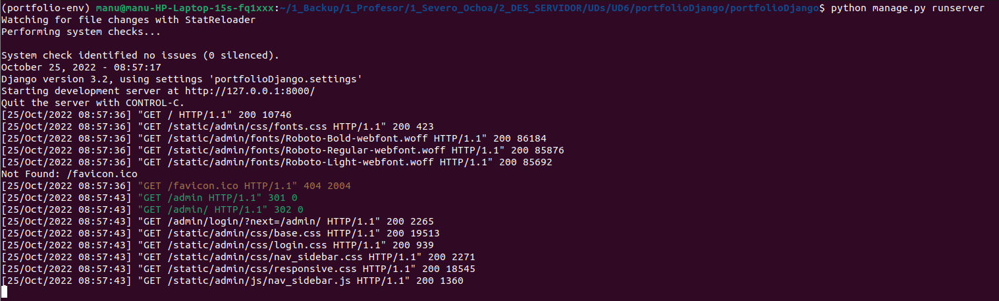
No aprofundirem més en els fitxers estàtics. Ací tens tota la documentació.
Només mencionarem tres aspectes:
-
Configuració de fitxers estàtics: ja ha sigut realitzada en l'apartat 5.1.
-
Càrrega d'estàtics en una plantilla, es realitza mitjançant:
{% load static %} -
Referència a un recurs estàtic en una plantilla, exemple:
<img src="{% static 'my_app/example.jpg' %}" alt="My image">
Perquè els fitxers estàtics es guarden en la ruta especificada en les variables STATIC_URL i STATIC_ROOT, hem d'executar la següent ordre:
python manage.py collectstatic
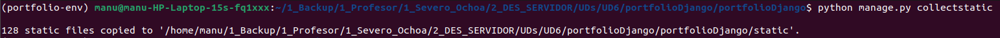
Ara veiem la carpeta static en el nostre projecte:
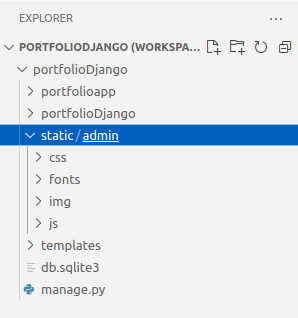
Els únics fitxers estàtics que tenim en aquests moments pertanyen a l'app d'administrador.
Cal mencionar també que la tendència actual és emmagatzemar els fitxers estàtics d'una aplicació web en servidors CDN.
Plantilles d'error¶
Tots hem vist el típic error 404 en teclejar incorrectament una URL en el navegador:
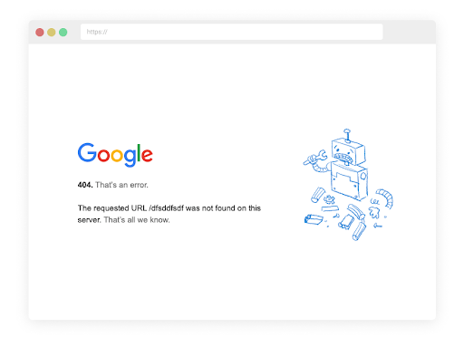
Nosaltres, que som programadors web avantatjats, ja sabem què significa aquest codi d'error, retornat pel protocol HTTP (segons s'explica en el mòdul de Desplegament d'aplicacions web). Però un usuari normal pot arribar a alarmar-se en obtenir aquest codi, sense saber exactament què ha passat. Podríem, d'alguna manera, retornar a l'usuari un missatge d'error més significatiu que l'ajude a saber què ha passat i què pot fer per solucionar el problema? Per a això Django ens proporciona una forma fàcil de retornar respostes a l'usuari en cas que es reben determinades respostes d'error del servidor.
Tot el que hem de fer és crear una plantilla per cada codi d'error, amb el número d'error corresponent, i situar-la en el directori templates, com es mostra a continuació:
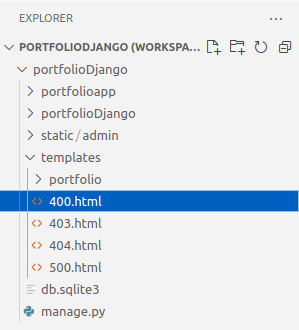
Descarrega aquestes plantilles d'Aules a la carpeta del projecte corresponent.
IMPORTANT: Aquestes pàgines d'error es mostraran quan la variable DEBUG de settings.py tinga el valor False.
Vistes¶
Les vistes són l'element de la nostra aplicació en què residirà la lògica de negoci, i es defineixen en el fitxer views.py, dins de cada app. Bàsicament prendran una petició HTTP com a entrada (request) i retornaran una resposta HTTP (response), que pot ser:
- Un document HTML
- Una redirecció a una altra URL
- Un error
- Un document XML o JSON
- Una imatge
- O qualsevol altra cosa
Les vistes se situen darrere de les URLs de la nostra aplicació web, com veurem en l'exemple guiat, i determinen (segons el MVC) l'aspecte visual de la resposta (mitjançant l'ús de plantilles), així com l'accés i manipulació a la BBDD.
D'aquesta manera, haurem de construir un mapa de URLs per a la nostra aplicació web, de manera que es definisca:
- Estructura de la URL: identificació de la URL perquè la faça única de les altres.
- Paràmetres: es definiran quins paràmetres s'accepten a través de la URL, poden ser opcionals.
- Vista: definida en views.py, que tractarà la petició HTTP rebuda a través de la URL.
Una vegada definides les URLs de la nostra aplicació, les utilitzarem fonamentalment en dos llocs:
- En les plantilles HTML, per establir la navegació pel lloc web.
- En les pròpies vistes, per a la redirecció a altres parts de l'aplicació, després d'aplicar la lògica de negoci.
Pàgines de l'aplicació¶
En aquest apartat utilitzarem tot l'anterior per desenvolupar el portafolis. Veurem el procés per a cadascuna de les pàgines de la nostra aplicació web.
Implementarem les vistes de les dues formes possibles per veure les diferències, és a dir: FBV i CBV.
Home¶
Aquesta serà la pàgina de benvinguda, amb el llistat de tots els projectes. Necessitarem una vista, que recupere de la BBDD tots els projectes i retorne la resposta en forma d'HTML acabat; la plantilla HTML (formada per codi HTML i codi incrustat) retornarà l'aspecte visual de la pàgina; finalment, la URL connectarà la ruta "/" arrel amb la vista.
Després de finalitzar els següents subapartats, la pàgina de benvinguda de l'aplicació quedarà de la següent manera:
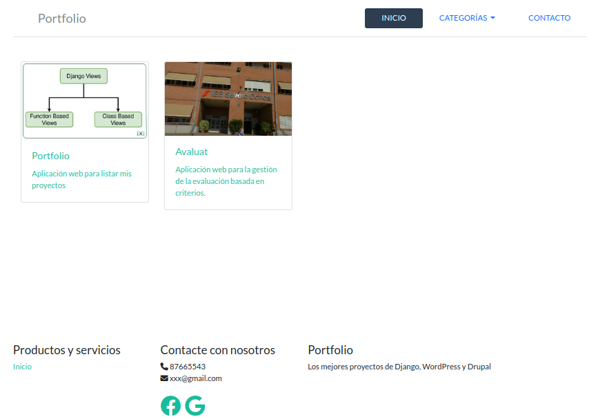
Vista¶
El tipus de vista FBV (Function Based View) podria ser de la següent manera:
from django.shortcuts import render # Per a FBV
from .models import Projecte
def home_view(request):
projectes = Projecte.objects.all()
context={'projecte': projectes}
return render(request, 'portfolio/home.html', context)
Cal fer notar que el nom de la vista va en minúscules, per convenció, perquè es tracta d'un mètode, no una classe.
Una possible versió d'aquesta vista en CBV (Class Based View) seria de la següent manera:
from django.views.generic import TemplateView # Per a CBV
from .models import Projecte
class HomeView(TemplateView):
template_name = 'portfolio/home.html'
def get_context_data(self, **kwargs):
context = super(HomeView, self).get_context_data(**kwargs)
context['projectes'] = Projecte.objects.all()
return context
En aquest cas, el nom de la vista és el nom d'una classe, per tant es segueix la convenció "camel case".
Aquest segon mètode sembla una forma més complicada d'implementar la mateixa vista. En aquest cas estem heretant de la classe TemplateView, que es tracta d'una classe dedicada exclusivament a visualitzar una template, i passar-li uns determinats paràmetres.
Hi ha més tipus de vistes basades en CBV, cadascuna amb un propòsit particular. Anem a revisar aquest enllaç i comentar les vistes més destacades.
En els dos casos hem recuperat els projectes mitjançant Projecte.objects.all(), no hem hagut de realitzar cap sentència SQL. Això és gràcies a l'ORM de Django, que ens permet utilitzar una sintaxi per manipular la BBDD sense necessitat d'escriure sentències SQL específiques de la BBDD que subjau en l'aplicació. D'aquesta manera podem tindre una base de dades sqlite3 per a desenvolupament, una postgresql per a altres entorns, i no hem de canviar les expressions SQL.
Per saber més sobre l'ORM de Django, consulta aquest enllaç, o també aquest altre.
La variable resultant d'utilitzar l'ORM de Django "projectes" s'anomena queryset, i és un conjunt de dades agregat amb tot el necessari per capturar les dades recuperades per la consulta a BBDD.
Finalment, les dues vistes fan referència a un objecte "context". Per a què serveix aquest objecte? Precisament es tracta d'un diccionari que més endavant utilitzarà la template per representar els diferents valors en la interfície d'usuari. Aquest objecte s'injecta en la template, la qual, mitjançant codi incrustat, el manipularà i representarà els seus diferents valors. Es tracta, doncs, de la forma que tenim de fer dinàmiques les diferents pàgines de la nostra aplicació web.
Si no injectàrem els projectes a la template via context, es tractaria d'una pàgina estàtica, que és el propòsit de la classe TemplateView.
Template¶
La plantilla a utilitzar en aquesta pàgina s'anomena home.html, i tindrà el següent contingut:
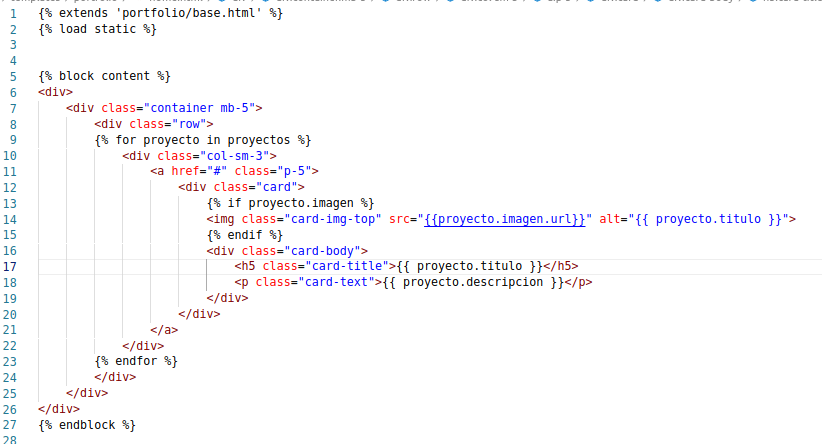
En classe comentarem les diferents parts de què es compon.
Com veiem, es maneja la variable "projectes" mitjançant codi incrustat. Com ha arribat ací aquesta variable? Mitjançant l'objecte "context" proporcionat per la vista (ja siga FBV o CBV).
URL¶
La configuració de la URL canviarà lleugerament si decidim implementar la vista mitjançant FBV o mitjançant CBV.
Per al cas de FBV, cal afegir el següent element en la llista urlpatterns del fitxer:
path('fbv/', views.home_view, name='home'),
path('cbv/', views.HomeView.as_view(), name='home'),
NOTA: En CBV és necessari cridar al mètode as_view que converteix la classe en una vista invocable.
En ambdós casos, cal importar les vistes del fitxer views.py en el fitxer urls.py:
from portfolioapp import views
Projecte¶
A la pàgina de projecte s'arribarà després d'haver fet clic sobre un projecte en la llista de la pàgina de benvinguda. Per a això cal omplir l'atribut href de la línia 11 en home.html (ara té el valor "#"). Això ho farem una vegada configurem la URL per a la fitxa del projecte.
Anem a configurar els fitxers que ens fan falta per a aquesta pàgina.
Vista¶
Aquesta vista tindrà una particularitat: ha de rebre un paràmetre de la URL, que serà l'id del projecte.
Una possible forma de fer-ho mitjançant FBV és la següent:
def projecte_view(request,pk):
projecte = Projecte.objects.get(pk=pk)
context = {'projecte': projecte}
return render(request,'portfolio/projecte.html',context)
class ProjecteView(TemplateView):
template_name = 'portfolio/projecte.html'
def get_context_data(self, *args, **kwargs):
context = super(ProjecteView, self).get_context_data(**kwargs)
context['projecte'] = Projecte.objects.get(id=kwargs['pk'])
return context
En els dos tipus de vista es fa referència a context, que és un diccionari amb atributs que estaran disponibles en la template (com s'ha comentat anteriorment). La modificació del context serà primordial quan vulguem injectar dades dinàmiques en les templates, ja siga mitjançant CBV o FBV.
Si manipulem la URL per modificar el paràmetre id i introduir un número de projecte que no existeix, tindríem un problema, ja que el mètode get retornaria un error i no estem contemplant aquest cas en el codi. Hauríem d'introduir un bloc try/catch per contemplar aquesta excepció.
És per això que, en aquest cas, és més convenient utilitzar el mètode get_object_or_404, de la següent manera. Consulta l'enllaç per veure un exemple.
ACTIVITAT: modifica la teua vista per utilitzar get_object_or_404.
NOTA: en Django es pot utilitzar "pk" o "id" indistintament per referir-nos a l'identificador de clau única assignat automàticament a cada nou objecte que es crea en una taula de BBDD. Totes les taules generades per Django tindran una columna "id" a la qual ens podem referir també per "pk".
Template¶
La plantilla que podem utilitzar és la següent:
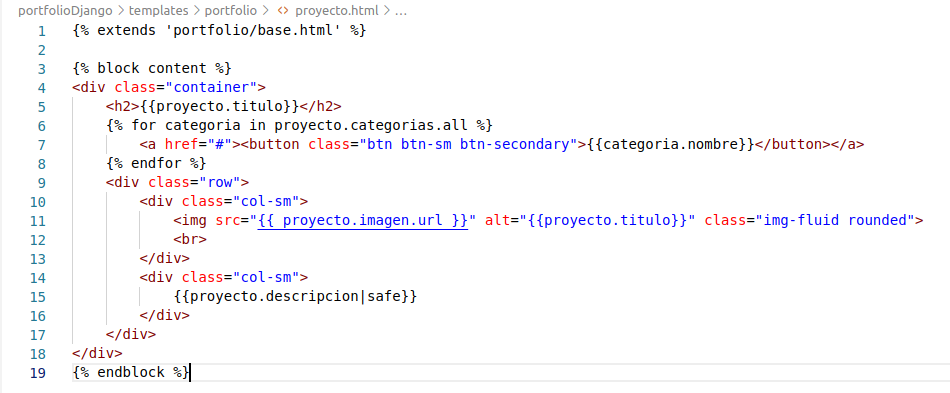
NOTA: l'href de la línia 7 està incomplet, ho resoldrem en un apartat més endavant.
NOTA: També podem veure que, una vegada tenim l'objecte "projecte" podem accedir a les seues categories simplement mitjançant la següent expressió en la template (gràcies a la clau forana entre el model Projecte i el model Categoria):
proyecto.categorias.all
NOTA: En la template aquesta expressió no acaba amb els parèntesis, com sí succeiria si estiguérem cridant aquesta funció de l'ORM des de, per exemple, una vista.
URL¶
Finalment, configurem la URL per a aquesta pàgina.
Per al cas de FBV afegim la següent línia a la llista urlpatterns de urls.py:
path('projecte_fbv/<int:pk>/', views.projecte_view, name='projecte'),
path('projecte_cbv/<int:pk>/', views.ProjecteView.as_view(), name='projecte'),
És necessari modificar l'estructura de la URL per poder rebre el paràmetre que identifique el projecte (en aquest cas, el seu id).
Ara podem completar la línia 11 de home.html, que quedaria de la següent manera:
<a href="{% url 'projecte' pk=projecte.id %}" class="p-5">
NOTA: Segons la sintaxi de Python, es requereixen cometes simples dins de cometes dobles, o viceversa.
Contacte¶
Aquesta serà la vista més senzilla de totes, perquè no necessitarem consultar cap dada de la BBDD, per tant no passarem cap valor en el context.
Vista¶
Si optem per FBV:
def contacte_view(request):
context = {}
return render(request,'portfolio/contacte.html',context)
class ContacteView(TemplateView):
template_name = 'portfolio/contacte.html'
Template¶
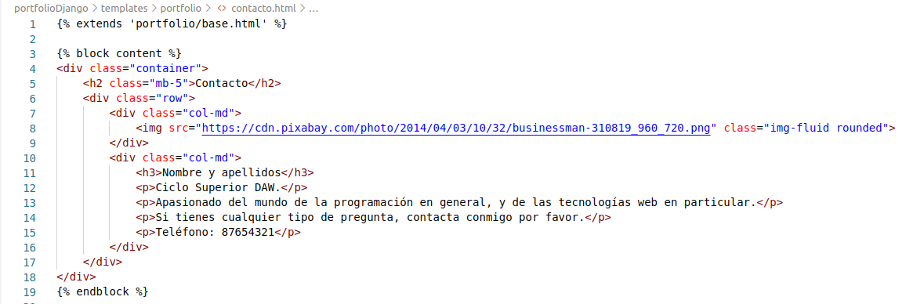
Modifica el valor "Nom i cognoms" del h3 per introduir les teues dades particulars.
ACTIVITAT DE CLASSE: passa com a context a la template el teu nom i cognoms en forma d'objecte, i modifica la template perquè en l'h3 mostre el teu nom i cognoms, passats per context.
URL¶
Per al cas de FBV:
path('contacte/', views.contacte_view, name='contacte'),
Per a CBV:
path('contacte/', views.ContacteView.as_view(), name='contacte'),
Filtrat per categoria¶
Anem a resoldre el filtrat per categoria. Volem que en fer clic sobre alguna de les categories de la fitxa del projecte, anem a la pàgina d'inici, i es mostren només els projectes amb eixa categoria.
Per a això, hem d'enviar a la URL "home" l'id de la categoria. Primer completem l'atribut href de la línia 7 de projecte.html de la següent manera:
href="{% url 'home' categoria.id %}"
path('<int:cat_id>/', views.HomeView.as_view(), name='home'),
Finalment, en la vista de home hem de rebre el paràmetre, i filtrar els projectes, no prendre'ls tots, depenent de si s'ha passat el paràmetre cat_id:
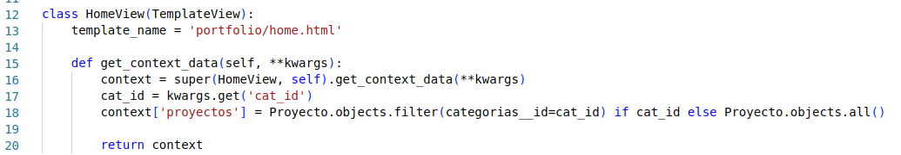
NOTA: kwargs (key-word arguments) és un diccionari (del tipus clau:valor) mitjançant el qual es poden passar paràmetres als mètodes. És una convenció pròpia de Python, i en aquest enllaç pots consultar més detalls. Per recuperar un valor del diccionari podríem escriure-ho de la forma kwargs['cat_id'], però utilitzar el mètode get és més convenient per evitar excepcions si eixa clau no es trobara en el diccionari.
Desplegable de categories: inclusion tags¶
Ens queda un detall, i és que volem que el desplegable de categories ens mostre totes les categories i puguem filtrar en fer clic sobre alguna d'elles, però de manera dinàmica segons els valors que es troben en BBDD.
Però existeix un problema, i és que el dropdown de categories està en el template header.html, i aquest template no està associat directament a cap vista, que és precisament l'element que li proporcionaria les dades. Llavors: com podrem proporcionar a una template dades sense passar per una vista? Per a això s'utilitzen els anomenats inclusion tags.
En primer lloc, hem de crear un mètode la funció del qual serà retornar un diccionari. Aquest diccionari servirà de context per a l'inclusion tag. Per a això, crearem una estructura de directoris per a emmagatzemar els possibles inclusion tags de l'app portfolioapp, de la següent manera:
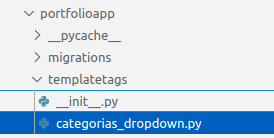
És molt important que el fitxer init.py (està buit) estiga dins de la carpeta templatetags. Dins de la carpeta templatetags també hi haurà un altre fitxer categorias_dropdown.py amb el següent contingut:
from django import template
from ..models import Categoria
register = template.Library()
@register.inclusion_tag('portfolio/categorias_dropdown.html')
def categorias_dropdown():
categories = Categoria.objects.all()
return {'categories': categories}
Això associarà el mètode categorias_dropdown a una nova plantilla categorias_dropdown.html, i el registrarà en la llibreria de templates, perquè estiga disponible al llarg de l'aplicació web i es puga utilitzar sempre que ho necessitem.
NOTA: s'anteposen dos punts .. a models per pujar un nivell en la jerarquia de directoris, des de categorias_dropdown.py, i així trobar el fitxer models.py. Es tracta d'una ruta relativa al fitxer actual, i és la forma de pujar un nivell.
A continuació, creem una nova plantilla categorias_dropdown.html amb el següent contingut:
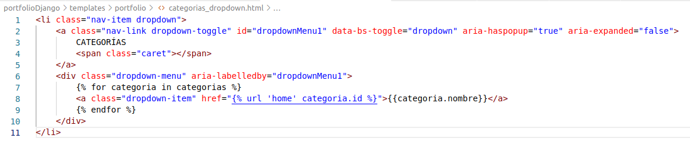
Donem per suposat que tindrem un objecte categories que podrem recórrer, ja que ens el proporcionarà l'inclusion tag que hem definit i registrat en categorias_dropdown.py.
Cada entrada en el dropdown serà un enllaç a la pàgina "home" passant-li com a paràmetre l'id de categoria, que processarà correctament segons el que hem desenvolupat en l'apartat anterior.
Finalment, l'únic que hem de fer és carregar aquest inclusion tag en header.html, i referenciar-lo (línies 1 i 12):
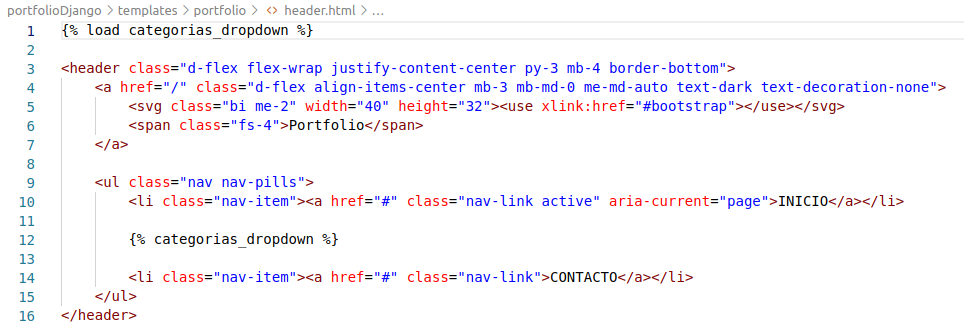
En refrescar l'aplicació i fer clic sobre el dropdown, ens apareixeran totes les categories que hem donat d'alta mitjançant l'administrador de Django.
Navegació¶
És el moment d'enllaçar les opcions de navegació de l'aplicació, una vegada tenim configurades totes les URLs.
En header.html, completem els tres atributs href de la següent manera (línies 4, 10 i 14):
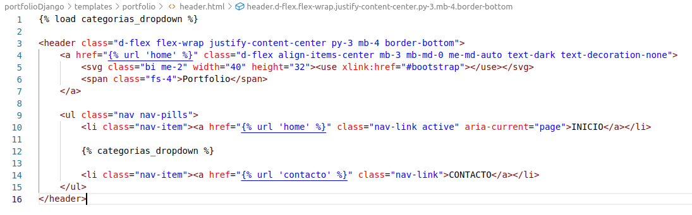
BONUS TRACK: DOCKERITZACIÓ DEL PROJECTE¶
Tenim el projecte funcionant mitjançant un entorn virtual, però ens hem aficionat a que la nostra vida siga més senzilla mitjançant els contenidors de Docker. Teníem la nostra anterior versió del portafolis (en PHP) dockeritzada, podríem fer el mateix amb el nostre projecte en Django?
Per descomptat que sí, i en aquest apartat veurem com fer-ho.
Creació de la imatge¶
Creem primer un fitxer Dockerfile al mateix nivell que el fitxer requirements.txt. Aquest nou fitxer tindrà el següent contingut:
FROM python:3.10
ENV PYTHONUNBUFFERED 1
RUN mkdir /code
WORKDIR /code
ADD requirements.txt /code/
RUN pip install --upgrade pip
RUN pip install -r requirements.txt
Docker compose¶
Finalment creem el fitxer docker-compose.yml al nivell del Dockerfile:
version: '3'
services:
web:
build: .
command: python manage.py runserver 0.0.0.0:8000
ports:
- "80:8000"
volumes:
- ./portfolioDjango/:/code
Només queda executar docker-compose up, i comprovar que l'aplicació s'està executant en localhost, port 80.
VERIFICACIÓ DE L'EXEMPLE GUIAT¶
Durant les classes presencials es durà a terme la verificació que s'ha desenvolupat l'exemple guiat, per a cobrir els criteris d'avaluació a) i b) del RA5, i l'a) del RA6.